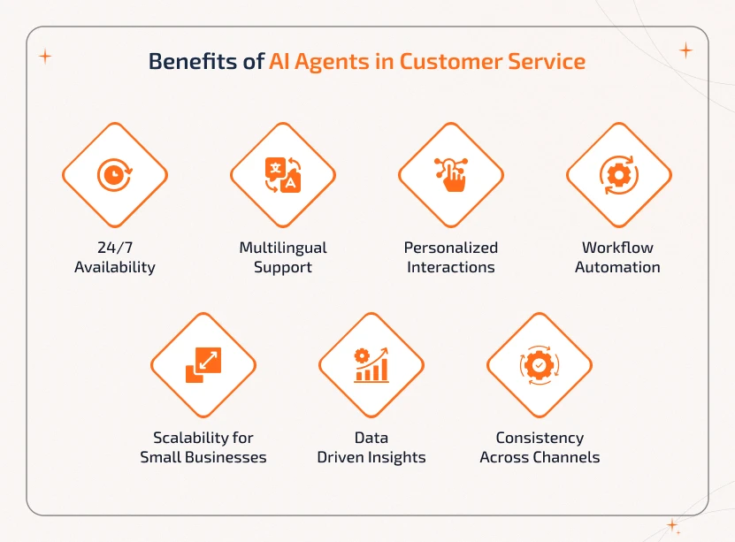
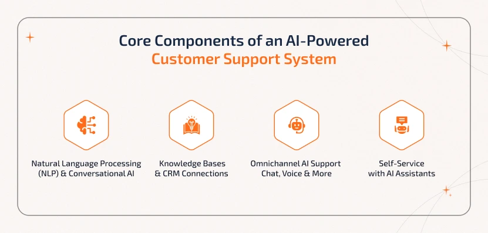
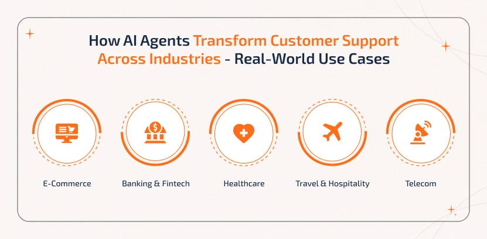
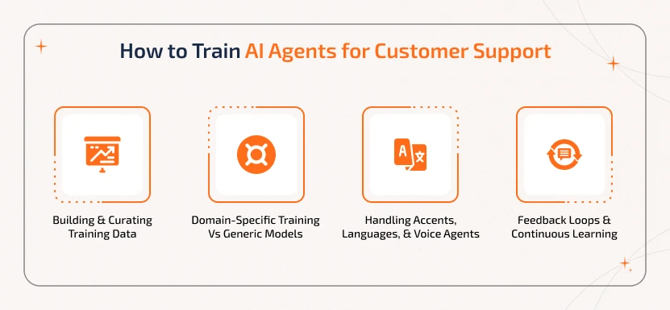
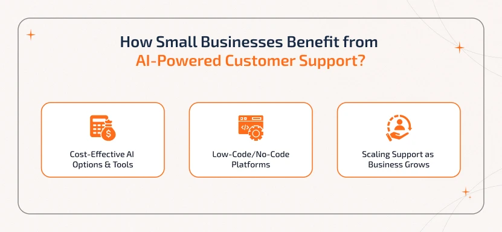
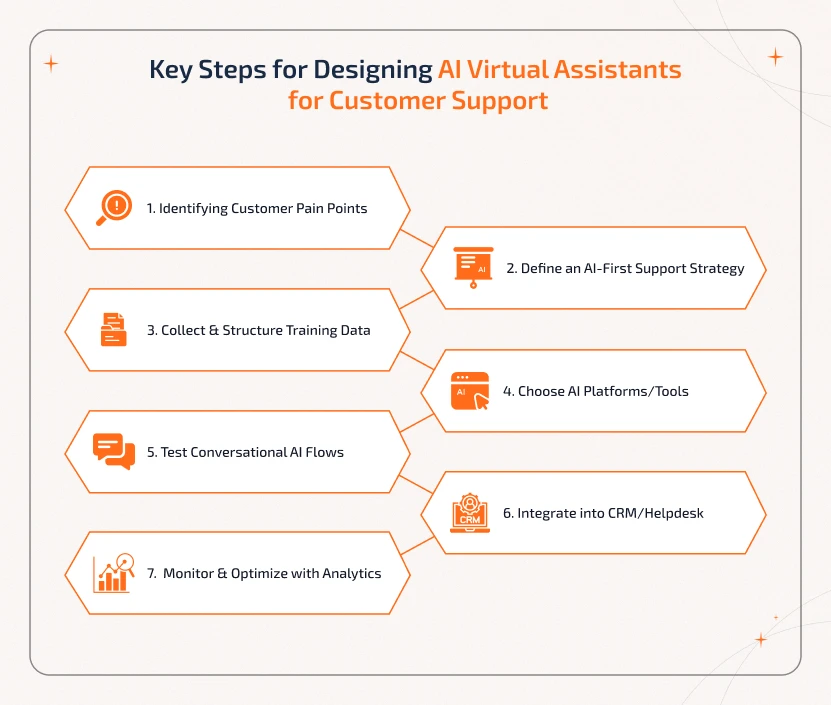
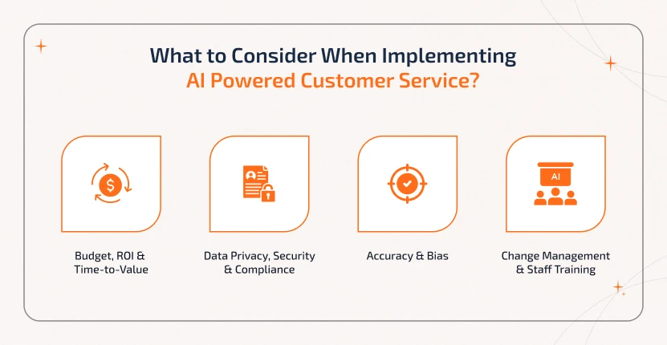

In 2025, customer expectations have reached a point where they demand instant responses, personalized experiences, and round-the-clock availability across all channels. Relying only on human agents is not enough, as they take time to respond and often provide generic responses. These reasons often pave the way for businesses to lose trust and loyalty. Whether it is about answering routine queries instantly or delivering context-aware recommendations, AI agents for customer support are redefining what modern services look like.
To meet the expectations, organizations are adopting the AI-first customer support strategy that is a combination of automation, personalization, and predictive intelligence. By integrating AI agents for customer support, it is easy to handle thousands of interactions at the same time, reduce wait times, and maintain consistent service quality across channels. While this approach doesn't replace human representatives, it does empower them to focus more on complex, empathy-driven cases where human judgment matters the most.
Going a step forward, AI based customer support in the current time goes beyond simple chatbots. i.e., it uses conversational AI, intelligent workflow automation, and real-time analytics to connect with customers, find out their needs, and resolve issues before they become a serious problem.
According to Zendesk reports, about 51% of consumers prefer interacting with bots over humans when they look for immediate support. This, in turn, highlights the growing demand for instant customer support, which otherwise is hard for the human-only teams to provide. Companies that adopt AI agents for customer support are not just optimizing the support-related operations, but they are building stronger and everlasting relationships with their customers.
What is AI in Customer Service?
AI in customer service refers to the use of artificial intelligence technologies to deliver faster, smarter, and more personalized customer support. The technologies include natural language processing, machine learning, and AI-driven automation . While the traditional systems rely heavily on human agents' inputs, AI-driven tools are capable of analysing the intent, responding in natural language, and making improvements when needed based on customer interactions. As a result, the outcome becomes more efficient, accurate, scalable, and available 24/7.
Most often, an AI agent vs a chatbot in customer service is compared as both terms are used interchangeably. However, these terms represent different levels of capability.
- A basic chatbot is rule-based and works on pre-defined scripts. You can find them answering simple FAQs or directing customers to required pages, while they find it difficult to deal with complex, context-driven conversations.
- On the other hand, an AI agent goes a step further and uses conversational AI for customer service. Thus, AI agents can understand natural language, learn from past interactions, interpret context, and deliver customized solutions. They can forward complex issues that require empathy or advanced judgment to the human representatives. Thus making them more versatile than traditional chatbots.
Check out the table that explains the key difference between an AI Agent Vs Chatbot in customer service.
| Feature | Chatbot | AI Agent |
|---|---|---|
| Response Style | Scripted, pre-defined | Adaptive, context-aware |
| Complexity Handling | Simple queries only | Multi-step, complex issues |
| Learning Ability | Static, no improvement | Continuously self-learning |
| Personalization | Minimal | Highly personalized |
| Proactivity | Reactive only | Predictive & proactive |
| Human Escalation | Manual or fixed | Intelligent & seamless |
Real-world AI in customer service examples include e-commerce platforms recommending products, banks using AI to detect fraud, telecom companies resolving connectivity issues with automated troubleshooting, etc.
Benefits of AI Agents in Customer Service
Modern AI agents are capable of going beyond answering queries. i.e., it delivers always-on availability, multilingual assistance, and personalized interactions. Upon combining AI support workflow automation with data-driven insights, AI agents help businesses reduce costs, improve efficiency, and create consistent experiences across channels.

1. 24/7 Availability
AI agents provide round-the-clock customer support and thus deliver instant
responses
anytime. 24/7 availability improves trust, minimizes wait times, and ensures
customers never feel ignored.
2. Multilingual Support
With AI for multilingual customer support, businesses can break language barriers
and
serve global customers seamlessly. Whether it is English or any regional dialects,
AI agents offer consistent and localized support that builds inclusivity and
stronger customer relationships.
3. Personalized Interactions
Through AI-powered customer assistance, users will be able to get more personalized
interactions. AI agents make use of past behaviour, user preferences, and purchase
history to deliver tailored recommendations. This makes customers happier and drives
more sales.
4. Workflow Automation
With AI support workflow automation, repetitive tasks like ticket routing, order
tracking, or status updates can be handled automatically. This speeds up
resolutions, reduces errors, and allows the human agents to focus more on complex
issues that require human empathy.
5. Scalability for Small Businesses
With AI powered customer support for small businesses, it becomes easy for companies
to scale without a heavy budget. Instead of hiring large teams, SMEs can choose AI
agents to manage more customer queries without much effort. This lets the small
businesses grow efficiently and compete just like the bigger enterprises.
6. Data-Driven Insights
AI agents are no longer about providing answers. Instead, they become advanced
versions and thus gather & study customer data. With these insights, businesses can
spot the trends, understand customer needs, and adjust strategies in real-time. Over
time, customer support becomes a growth factor for the business rather than being an
expense.
7. Consistency Across Channels
While traditional human support varies across platforms, AI
agents are unlike them. AI agents ensure to deliver the same level of experience no
matter if it's a chat, email, voice, or social media. Thus, customers get reliable,
consistent, and unified service no matter how they want to connect.
Our AI agents deliver 24/7 support, personalized experiences, and cost savings with AI powered customer service.
Core Components of an AI Powered Customer Support System
An AI-powered customer support system is built on multiple key components. This includes NLP, smart knowledge bases, self-service assistants, and omnichannel agents. Altogether, they provide faster, more personalized, and consistent CX on every touchpoint.

1. Natural Language Processing (NLP) & Conversational AI
AI agents make use of conversational AI and NLP to understand the questions in plain
language and respond in a natural tone. This makes the interactions feel more human
and helps customers get accurate answers instantly.
2. Knowledge Bases & CRM Connections
AI agents are capable of accessing past interactions and company information by
linking knowledge bases, CRMs, and help desk tools. With this, the AI agents provide
relevant answers at a much faster rate without needing customers to repeat
themselves.
3. Omnichannel AI Support - Chat, Voice & More
AI-powered agents ensure customers get consistent support across the channels with
omnichannel support. This includes live chat, email, voice, and social media. No
matter if it is a quick call or text, AI agents ensure the same quality and tone on
all platforms.
4. Self-Service with AI Assistants
AI assistants provide their support to customers in solving
problems on their own. The self-service options, like guided troubleshooting, FAQs,
instant recommendations, etc., allow businesses to reduce the ticket volume while
giving customers faster resolutions.
How AI Agents Transform Customer Support Across Industries - Real-World Use Cases
AI agents for customer service are used across industries and are changing the way businesses offer support to their customers. They ensure to deliver experiences that feel like humans by automating repetitive tasks, providing faster responses, and personalizing every interaction. Get to know how different sectors are using them in brief:

1. E-Commerce
Here, AI agents are used to manage order tracking, returns, and product-related
queries in real-time. This ensures customers experience a smooth shopping journey
with instant answers, repeat sales, and boosted satisfaction.
2. Banking & Fintech
In the banking sector, AI-powered support covers everything from fraud detection
alerts to transaction updates. With added security, customers can get help with
account-related queries anytime without long call center delays.
3. Healthcare
AI agents in healthcare customer support include scheduling appointments, accessing
FAQs, and receiving reminders. With this, customers get reduced wait times, minimize
missed visits, and allow medical staff to focus on critical care.
4. Travel & Hospitality
With conversational AI, bookings, cancellations, and itinerary updates are
simplified. Thus, travellers can get quick resolutions and personalized
recommendations.
5. Telecom
In telecommunication, AI agents are used to troubleshoot technical issues, resolve
billing-related queries, and handle a high volume of calls. All these improve
overall service quality, speed up resolutions, and minimize customer frustration.
AI agents are functioning more than as support tools across businesses of different industries. They are functioning in such a way to build trust, improve efficiency, and create customer-first experiences.
How to Train AI Agents for Customer Support
With AI Agent training for customer support, it works efficiently. i.e., AI agents need the right data, context, and continuous refinement to deliver human-like assistance. Here is what goes into effective training:

1. Building & Curating Training Data
A clean, well-structured data ensures agents can answer more precisely. Historical
tickets, customer interactions, and FAQs form the foundation.
2. Domain-Specific Training Vs Generic Models
Generic models are capable of understanding broader queries. However,
Domain-specific
training will let customize AI agents to evolving industry needs and make responses
more relevant and reliable.
3. Handling Accents, Languages, & Voice Agents
Conversational AI for customer service should identify the accents, support multiple
languages, and adapt to voice-based interaction when it comes to global service
offerings.
4. Feedback Loops & Continuous Learning
AI agents will improve over time via customer feedback and real-world interactions.
Thus, continuous learning makes them smarter, faster, and more accurate every day.
By providing proper training, AI-based customer support systems evolve from basic bots into intelligent virtual assistants that deliver consistent & customer-first experiences.
Empower your AI agents with advanced training to deliver accurate, human-like customer support 24/7.
How AI Workflow Automation Transforms Customer Support?
AI-powered workflow automation allows businesses to streamline repetitive, time-consuming tasks, while reducing manual errors and improving overall efficiency. AI agents ensure smoother operations and faster resolutions.
1. Intelligent Routing & Triage
AI agents can analyse incoming requests, find out urgency, and route tickets to
the right department or agent. This way, it cuts down the wait times and
improves the first-response accuracy.
2. Automating Low-Effort Tasks & Escalations
Routine tasks such as resetting passwords, updating related orders, and checking
statuses are handled by AI. Thus, those complex tasks that require human agent
support are smoothly handled.
3. Ticket Summarization & Transcripts
AI supports creating clear summaries of tickets, after-call notes, and full
voice
or text transcripts. This, in turn, saves AI agents time, minimizes errors, and
helps managers track performance efficiently.
With AI automation handling the routine, customer support teams can focus on delivering human-like creativity, empathy, and problem-solving where it matters the most. This is one of the ways you can utilize AI in customer service.
When to Use AI Voice Agents in Customer Service?
Generative AI automation is bringing transformative impacts across how industries In the fast-paced digital era, there are many customers who prefer talking over rather than typing. Thus, voice interactions have become an essential part of modern customer service. An AI voice agent for customer support lets businesses provide natural, human-like conversations by answering calls instantly without long wait times.
These AI-powered voice agents are powered by advanced speech recognition and conversational AI for customer service. Thus, they can understand different tones, accents, and languages. You can utilize AI in customer service in this way to ensure the customers that their requests are heard and supported, irrespective of where they are calling from.
AI voice agents are not just known for just responding, but they can also detect emotions through sentiment analysis. i.e., they will adjust the tone and responses based on the caller's voice by finding out their urgency, frustration, and satisfaction. When needed, voice agents will also transfer the call to a human agent.
Whether it is about order tracking, account updates, or appointment scheduling, AI voice agents can handle the repetitive tasks and free up human agents to let them concentrate more on the complex cases that require their attention. With speed, empathy, and efficiency, AI voice agents will create better overall customer experiences while reducing operational costs for businesses.
With rising customer expectations, integrating business systems with Voice AI ensures personalized, round-the-clock support that feels less like talking to a machine and more like speaking to a trusted service representative.
Why Self-Service AI Assistants and Virtual Agents Are Key to Modern Support
Modern customers are expecting to solve problems on their own just before reaching out to a live agent. This is when self-service AI assistants and virtual customer support agents comes into play. They aim to help businesses deliver more convenient support experiences at a faster rate.
1. Help Center & Knowledge Base Augmentation
AI brings the most relevant articles, guides, and resources based on the customer's
enquiry. This way, AI enhances traditional help centers and thereby reduces the
search time and frustration among customers.
2. FAQ Bots & Guided Troubleshooting
With self-service AI assistants, there is no need to scroll through endless FAQs.
Instead, customers can directly ask an AI assistant for help. From article
suggestions to step-by-step troubleshooting procedures, AI makes self-service more
interactive and effective.
3. Virtual Agents with Human Fallback
With the help of virtual support agents, it is possible to handle routine questions,
transactions, and updates. In case of complex or emotional cases, virtual agents
will transfer the conversation directly to a human agent and ensure the customers
never feel lost.
The combination of self-service convenience and human backup not just improves customer satisfaction but also reduces support costs and wait times. Thus, it offers a win-win situation for businesses as well as their customers.
Let customers get answers quickly while AI agents handle routine tasks, freeing your team for complex cases.
How Small Businesses Benefit from AI-Powered Customer Support?
Small businesses often have limited budgets and staff. As a result, they often face the challenge of providing quality support. With the help of AI-powered customer support for small businesses, it is possible to deliver faster, reliable, and professional service without heavy investment.

1. Cost-Effective AI Options & Tools
Choosing affordable AI tools for customer service helps small businesses provide
real-time assistance, manage FAQs, and automate responses. This way, they can
improve service quality while cutting down the costs.
2. Low-Code/No-Code Platforms
Business owners do not always require large IT teams to deploy AI. Relying on
low-code and no-code platforms make it simple to set up AI chatbots or voice agents
with minimal technical skills.
3. Scaling Support as Business Grows
With customer inquiries increasing, AI scales effortlessly. Instead of hiring more
staff, small businesses can choose AI to handle higher volumes while human agents
focus on complex issues.
By adopting AI-first customer support strategy, SMEs can compete with larger enterprises while still saving time and money. This in turn helps them build trust and fuel long-term growth.
How AI Agents Enable Multilingual Customer Support
With customers spread across the world, it is common for them to seek support in their own language. AI agents for multilingual customer support make this possible by detecting a customer’s preferred language, translating queries, and delivering accurate responses in real time.
1. Language Detection & Translation
AI agents can quickly identify the language used, provide instant translation
support, and ensure communication happens without delays or misunderstandings.
2. Local Context & Personalization
Beyond literal translations, AI agents consider cultural nuances and local
preferences to make responses feel natural, personalized, and context-aware instead
of robotic.
3. Challenges & Solutions
Maintaining tone, accuracy, and cultural sensitivity can be challenging with
automated translations. Advanced conversational AI models address this by learning
from interactions, improving accuracy, and adapting tone to match customer
expectations.
With these capabilities, businesses can serve customers anywhere in the world, break down language barriers, and deliver consistent, customer-first experiences that build long-term loyalty.
All That You Need to Know About Integrating AI Agents into Your Support Systems
Integrating AI agent into support system workflow is becoming an essential entity when it comes to modernizing customer service. Instead of replacing your existing tools, AI agents work alongside them. They can seamlessly connect with CRMs, helpdesks, live chat platforms, and ticketing tools. This means customers need not repeat information themselves, and support teams can respond with full context.
Upon linking directly to your CRM or helpdesk, these agents gain instant access to the following:
- Customer profiles
- Tracking an order
- Resetting passwords
- Past interactions
- Purchase history
With this, businesses can offer customers faster and more personalized answers while reducing the need for customers to repeat information multiple times.
Customer support AI solutions can be integrated into live chat systems, automate initial responses, route tickets, and provide real-time translations for multilingual support. While AI agents can manage live chat by providing instant responses or suggesting knowledge base articles, they can also pass complex cases to human agents. This ensures customers get quick help while the team saves time.
Besides, data privacy is always important, and with a well-designed AI setup, customer details stay secure while meeting GDPR or CCPA requirements. Businesses can decide what data AI agents can access and keep the rest of the sensitive information safe.
In recent times, companies choose hybrid models as the best approach. That is, AI handles routine tasks like Q&A while human agents handle issues that require empathy or deeper problem solving. This speeds up support while ensuring customers feel valued and heard.
By addressing these challenges early, businesses can develop smarter strategies, With careful integration of AI into support systems, businesses can minimize response times, cut down costs, and scale support without diminishing quality.
Key Steps for Designing AI Virtual Assistants for Customer Support
Developing effective AI virtual assistants for customer support involves not just picking a tool, but building a strategy that resolves customer needs. Check out how businesses can approach it:

Step 1: Identifying Customer Pain Points
Begin by mapping out the most common issues customers face, such as order tracking,
billing, or fixing issues. This ensures the virtual assistant is designed to deliver
real value.
Step 2: Define an AI-First Support Strategy
This step helps in deciding which tasks should be automated and which should stay
with human agents. A clear scope helps balance speed with personalization.
Step 3: Collect & Structure Training Data
Virtual assistants can be trained with the help of past support tickets, FAQs, and
call transcripts. AI becomes smarter with the richer data it is trained on.
Step 4: Choose AI Platforms/Tools
The next step is to select platforms that fit your business needs. It may be
low-code tools for smaller teams or advanced conversational AI systems for
enterprises.
Step 5: Test Conversational AI Flows
By simulating real customer interactions, assistants can be checked for tone,
accuracy, and escalation paths. With the testing phase, it is possible to avoid
further frustrating experiences.
Step 6: Integrate into CRM/Helpdesk
Now is the time to connect the assistant with existing systems so it can access
customer history and provide contextual answers.
Step 7: Monitor & Optimize with Analytics
Finally, track performance, customer feedback, and resolution rates. Continuous
improvements ensure the AI adapts to evolving customer needs.
By following the above steps, businesses can design AI virtual assistants that not only reduce workload but also improve customer satisfaction by offering smarter, faster, and more consistent support.
What to Consider When Implementing AI Powered Customer Service?
Adopting AI in customer service will transform support operations. However, the success rate depends on careful planning. Hence, businesses should keep the following factors in mind before implementation:

1. Budget, ROI & Time-to-Value
AI adoption should fit within your budget while ensuring clear ROI. It is vital to
look at both short-term savings and long-term gains.
2. Data Privacy, Security & Compliance
Since AI systems are capable of handling sensitive customer data, compliance with
laws like GDPR is non-negotiable. Strong encryption, access controls, and
transparent policies build trust with customers.
3. Accuracy & Bias
AI agents must provide reliable and accurate answers. Regularly reviewing training
data will help avoid errors or biased responses that may harm customer trust.
Continuous updates and feedback loops ensure the best performance.
4. Change Management & Staff Training
Getting to know AI is not just about the technology but also about people.
Businesses can prepare their support teams to work alongside AI, focus on high-value
tasks, manage issues, and make empathy-driven interactions.
By addressing all these factors at an early stage, companies can integrate AI-powered customer service in a way that is secure, efficient, and customer-friendly. This ensures smooth adoption and long-term success.
How AI Agents Improve Customer Service - Metrics & Proof
When evaluating how AI agents improve customer service, the best way to measure the impact is through metrics and real-world results. Businesses using AI-powered support will check the measurable improvements across key areas such as:
1. Customer Satisfaction
AI agents provide instant responses and thus reduce long wait times. Companies using
AI-powered chat or voice agents report higher CSAT scores as customers get faster
and more accurate resolutions.
2. Net Promoter Score (NPS)
AI agents power up customer relationships by offering customized recommendations and
consistent support on all channels. With smoother interactions, businesses can find
a significant increase in NPS, and this shows higher trust and willingness to
recommend the brand.
3. Resolution Time
One of the most direct benefits of AI in customer service is faster resolution
times. AI agents will automate ticket routing, provide instant self-service, and
handle repetitive tasks in seconds. This cuts down the average handling times while
freeing human agents for high-value tasks.
Proof in Action:
Before AI, many companies struggled with 24–48-hour resolution windows. With AI-supported automation, we could witness the resolution time often drop to just minutes.
In fintech, AI agents cut first-response times by 80% while ensuring compliance and accuracy.
These results showcase that AI doesn’t just improve efficiency but also creates measurable value. By tracking metrics, businesses can prove ROI and continuously refine their AI customer service strategy for long-term growth.
Future Trends of Using AI Agents in Customer Service
We can expect the future of AI agents in customer service to offer more than reactive support. Instead of waiting for issues to appear, businesses can better adopt proactive and predictive AI. With real-time data analysis, AI agents can anticipate customer needs, flag issues, and recommend solutions before customers reach out. This shift means moving from problem-solving to true experience management.
The next key trend is multimodal AI. Rather than relying on text or voice, future customer service will involve a combination of voice, video, images, and even screen sharing for a seamless interaction.
In addition, generative AI is emerging as a co-pilot for customer support teams. By drafting responses, suggesting solutions, and summarizing conversations, generative AI minimizes agent workload while maintaining accuracy and brand tone.
The future of AI customer service also promises stronger integration across business systems. AI agents will not just answer questions but also connect with logistics, billing, and product databases to deliver end-to-end solutions.
Overall, these innovations mean AI customer service is shifting from a cost-saving tool into a competitive advantage. Thus, companies adopting these trends early will set new standards for speed, personalization, and customer loyalty in the coming years.
Why Sparkout is the Right Partner to Develop AI Agents for Customer Service
Choosing the right partner for developing customer support AI solutions ensures a drastic difference between a generic chatbot and an AI-first customer support strategy. Here is why Sparkout stands out:
Sparkout offers deep experience in building AI agents that deliver measurable results in real customer service environments.
From ideation to training data, deployment, and optimization, Sparkout offers full-stack AI development. Thus, the team ensures seamless integration into your support system.
Sparkout delivers hybrid support models where AI agents can handle routine queries and allow human agents to focus on complex, empathy-driven cases.
AI agents built at Sparkout are capable of connecting with existing systems like CRMs, helpdesks, ticketing tools, and live chat platforms. This makes integration smooth without disrupting existing workflows.
No matter which industry you are looking for customer support AI agents in, Sparkout delivers solutions based on industry needs, compliance standards, and customer expectations.
Sparkout’s AI solutions ensure trust remains intact as the team follows data privacy, compliance, and security as the core.
With an iterative, feedback-driven process, Sparkout ensures the solution scales with your business while improving KPIs like resolution time, CSAT, and cost savings.
Partner with Sparkout to deploy smart AI agents that boost efficiency, reduce costs & enhance customer satisfaction.
Conclusion
In the era of AI-powered customer support, AI agents provide 24/7 availability, multilingual assistance, automation, and predictive insights. Businesses embracing customer support AI solutions will stay ahead in delivering faster and more personalized user experiences.